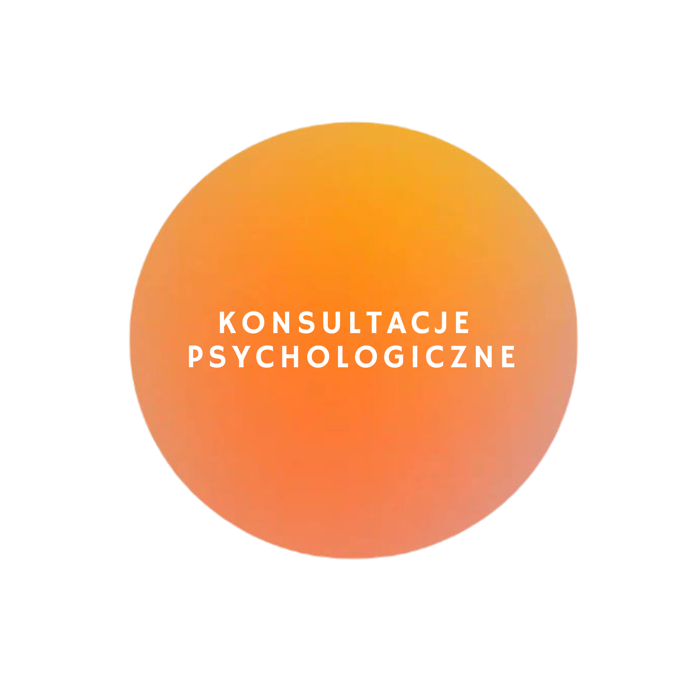
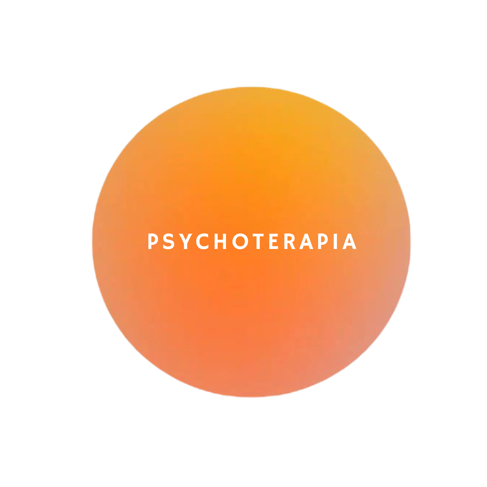
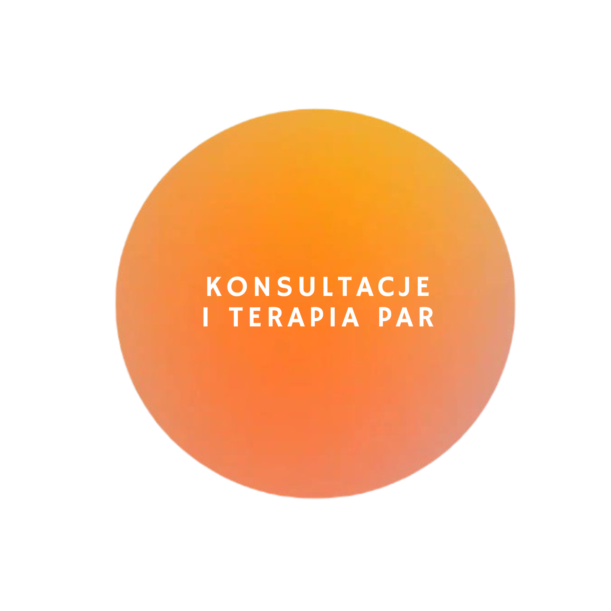

Codzienne wyzwania, trudne relacje, skomplikowane więzi rodzinne, zmiany, natłok emocji, mogą być nadmiernie przytłaczające. Może masz w głowie chaos czy problem, z którym nie możesz sobie sam poradzić? A może rozważasz terapię? Dobrym rozwiązaniem będzie wówczas skorzystanie z profesjonalnego wsparcia psychologicznego.
...
Psychoterapia jest dla każdego, kto chce głębiej zrozumieć swój wewnętrzny świat. To skuteczne wsparcie dla osób borykających się z różnymi problemami psychologicznymi, emocjonalnymi, relacyjnymi, czy też dylematami egzystencjalnymi. Proces terapeutyczny pomaga miarowo odkrywać i rozumieć źródła Twoich wewnętrznych konfliktów, nieświadomych mechanizmów i wzorców, które wpływają na Twoje myśli, uczucia i zachowania w życiu codziennym.
...
Jeśli czujecie, że oddalacie się od siebie, rozmowy zbyt często zamieniają się w kłótnie, a kryzys zamiast przeminąć z wiatrem, rozgościł się między Wami na dobre - to dobry moment na wspólną pracę. Terapia par to skuteczna metoda profesjonalnego wsparcia psychoterapeutycznego w pokonywaniu kryzysów i trudności w relacji, a także w rozwijaniu jego potencjału.
...DDA - Dorosłe Dzieci Alkoholików - to termin używany dla osób, które dorastały w rodzinie z problemem uzależnienia. DDD - Dorosłe Dzieci z Dysfunkcyjnych Rodzin - to szersza kategoria, obejmująca osoby dorastające w rodzinach, gdzie występowały inne formy dysfunkcji (bez uzależnień). Dorastanie w dysfunkcyjnej rodzinie pozostawia trwałe ślady na psychice i emocjach człowieka, powoduje długotrwały negatywny wpływ na jego funkcjonowaniu w życiu dorosłym.
...To natychmiastowa pomoc psychologiczna w sytuacjach nagłych. Interwencja jest formą krótkoterminowego wsparcia psychologicznego skoncentrowana na problemie.
...
Rozwój może przybierać różne formy – nie zawsze musi być to psychoterapia. Jeśli preferujesz samodzielną i systematyczną pracę, przygotuję dla Ciebie autorski Program Samorozwoju.
...